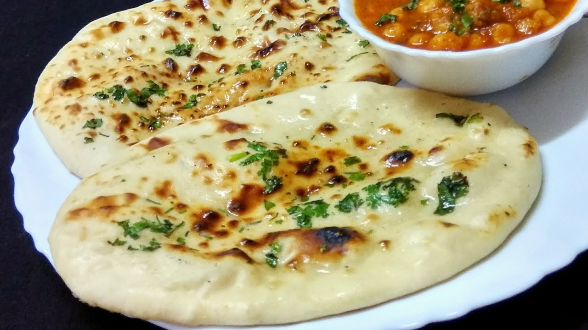

Paneer Naan Recipes

Description
Paneer Naan is a delightful variation of the traditional Indian naan bread, infused with a flavorful paneer (Indian cottage cheese) filling. This soft, pillowy flatbread is a popular choice in Indian cuisine, known for its delicious blend of textures and flavors. The dough is enriched with yogurt and a touch of ghee or butter, making it incredibly soft and pliable. The paneer filling, often seasoned with spices like cumin, coriander, and garam masala, adds a savory and slightly tangy flavor that complements the naan perfectly.
Baked in a tandoor or on a hot griddle, Paneer Naan develops a beautiful golden-brown crust with a tender, cheesy interior. It is a versatile accompaniment to a variety of Indian curries and gravies, from rich and creamy butter chicken to spicy vegetable korma. Paneer Naan can also be enjoyed on its own, with a simple side of pickle or yogurt, making it a delicious and satisfying bread option for any meal.
Ingredients
- For the Dough:
- All-purpose flour: 2 cups
- Yogurt: 1/2 cup (plain, full-fat)
- Baking powder: 1/2 teaspoon
- Baking soda: 1/4 teaspoon
- Salt: 1/2 teaspoon
- Sugar: 1 teaspoon
- Warm water: 1/4 to 1/2 cup (as needed, to make a soft dough)
- Ghee or oil: 2 tablespoons (for extra softness and flavor)
- For the Paneer Filling:
- Paneer: 1 cup (grated or crumbled)
- Onion: 1 small (finely chopped, optional)
- Green chilies: 1-2 (finely chopped, optional)
- Cilantro (coriander leaves): 2 tablespoons (chopped, optional)
- Cumin seeds: 1/2 teaspoon
- Garam masala: 1/2 teaspoon
- Coriander powder: 1/2 teaspoon
- Cumin powder: 1/4 teaspoon
- Turmeric powder: 1/4 teaspoon
- Red chili powder: 1/4 teaspoon (adjust to taste)
- Salt: to taste
- Lemon juice: 1 teaspoon (optional, for a tangy flavor)
- For Cooking:
- Ghee or butter: for brushing on the naan
- Nigella seeds (kalonji): 1 teaspoon (optional, for sprinkling on top)
Steps
- Prepare the Dough:
- In a large bowl, mix 2 cups of all-purpose flour, 1/2 teaspoon of baking powder, 1/4 teaspoon of baking soda, 1/2 teaspoon of salt, and 1 teaspoon of sugar.
- Add 1/2 cup of yogurt and 2 tablespoons of ghee or oil to the dry ingredients.
- Gradually add 1/4 to 1/2 cup of warm water while mixing, until a soft, elastic dough forms.
- Knead the dough on a lightly floured surface for about 5-7 minutes until smooth. Cover with a damp cloth and let it rest for at least 1 hour.
- Prepare the Paneer Filling:
- In a bowl, combine 1 cup of grated or crumbled paneer, 1 small finely chopped onion (optional), 1-2 finely chopped green chilies (optional), and 2 tablespoons of chopped cilantro (optional).
- Add 1/2 teaspoon of cumin seeds, 1/2 teaspoon of garam masala, 1/2 teaspoon of coriander powder, 1/4 teaspoon of cumin powder, 1/4 teaspoon of turmeric powder, and 1/4 teaspoon of red chili powder.
- Season with salt to taste and mix everything well. Add 1 teaspoon of lemon juice if desired for extra tanginess.
- Assemble the Naan:
- Divide the rested dough into equal-sized balls.
- On a floured surface, roll each ball into a small circle (about 4-5 inches in diameter).
- Place a tablespoon of the paneer filling in the center of the rolled dough. Fold the edges over the filling and pinch to seal.
- Gently flatten the filled dough ball and roll it out into a larger circle (about 6-7 inches in diameter) while keeping the filling enclosed.
- Cook the Paneer Naan:
- Heat a tandoor or a heavy skillet (cast iron works well) over medium-high heat.
- Place the rolled naan on the hot skillet and cook until bubbles form on the surface, then flip and cook the other side until golden brown.
- Brush the hot naan with ghee or butter and sprinkle with nigella seeds (optional).
- Repeat with the remaining dough and filling.
- Serve:
- Serve the Paneer Naan warm with your favorite curry or as a standalone snack. Enjoy!